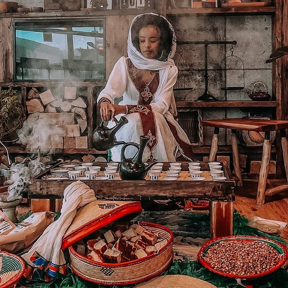

Traditional Ethiopian Coffee Menu
Experience the rich flavors of Ethiopia's finest coffee offerings.
Ethiopian Sidamo

A distinguished single-origin coffee known for its smooth, wine-like acidity and rich, full body.
Origin: Sidamo region, Ethiopia
Notes: Floral, fruity, chocolate undertones
Roast Level: Medium
Ethiopian Yirgacheffe

An aromatic coffee with a distinctively bright acidity, floral aroma, and citrusy flavor notes.
Origin: Yirgacheffe region, Ethiopia
Notes: Floral, citrus, tea-like
Roast Level: Light
Ethiopian Harar
Famously known for its complex and fruity flavor profile, with hints of wine and berries.
Origin: Harar region, Ethiopia
Notes: Fruity, wine-like, chocolatey
Roast Level: Medium-Dark
Ethiopian Limu

A mild and balanced coffee with a clean taste, exhibiting floral and citrusy undertones.
Origin: Limu region, Ethiopia
Notes: Floral, citrus, balanced
Roast Level: Medium